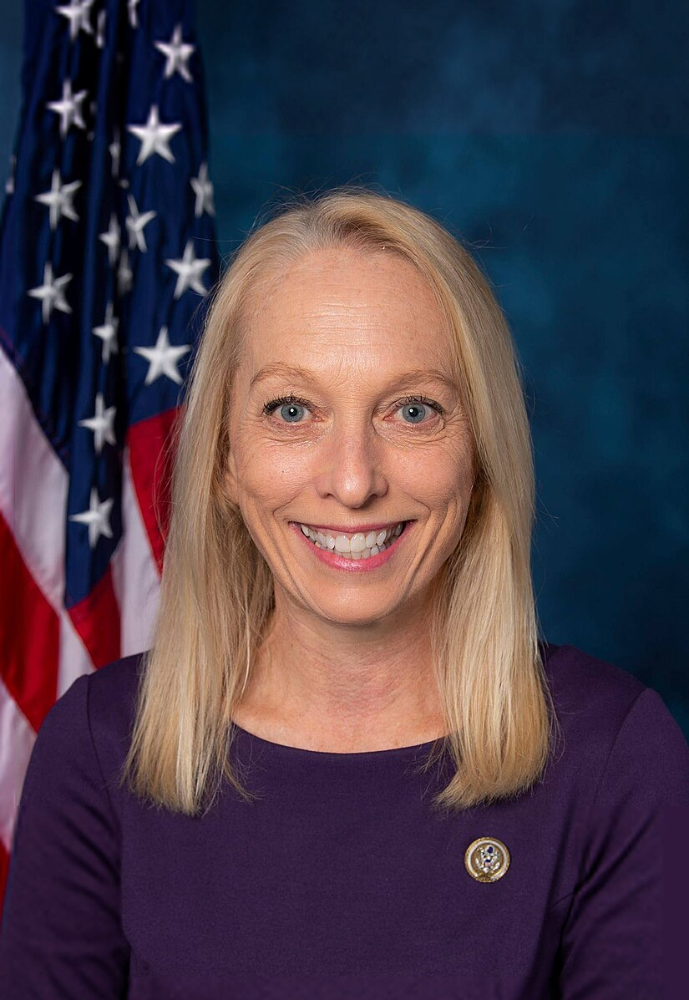
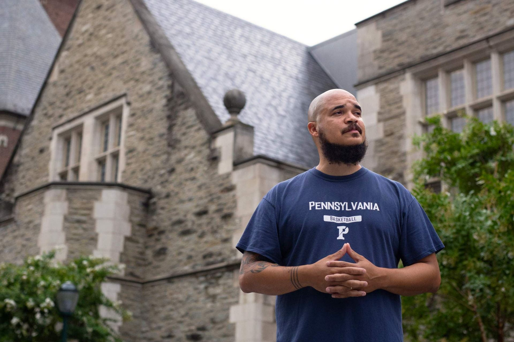

Congresswoman Mary Gay Scanlon has dedicated her career to serving the most vulnerable — first as a lawyer and now in Congress. She was first sworn into the U.S. House of Representatives on November 13, 2018 following a special election, and currently represents Pennsylvania’s 5th Congressional District. Congresswoman Scanlon’s legislative priorities include voting rights, access to justice, education, supporting economic growth for her region, common sense gun safety, and ending hunger. All of these priorities align with Congresswoman Scanlon’s main goal as an elected official: protecting and improving the lives of America’s children, families, veterans, and seniors. She currently serves on the House Committee on Rules, House Judiciary Committee, and serves as Ranking Member of the House Judiciary Committee's Subcommittee on the Constitution and Limited Government. She also chairs the House Caucuses on Access to Legal Aid, Youth Mentoring, and Foster Youth.


Rev. Charles (Chaz) Lattimore Howard, PhD
Howard has had a long career of working on the UPenn Undergraduate and Graduate campuses creating a welcoming spiritual and religious community. He is published in Sojourners Magazine, Daily Good, Christianity Today’s Leadership Journal, Chronicle of Higher Education, The Huffington Post, The Christian Century, The Philadelphia Inquirer, The Forward, Democratic Left, and Slate. He is a five-time published author with books including, most recently, Black Theology as Mass Movement, Pond River Ocean Rain and The Bottom: A Theopoetic of the Streets. Howard was recently appointed Vice President for Social Equity and Community, in which he will “lead programs and initiatives that promote and support communication, collaboration, research, and innovative programming within the Penn community that deepen awareness and help to advance the University’s mission of fostering social equity, diversity, and inclusion.”
Lia Howard
“Lia Howard is a political scientist who specializes in American politics. She has taught at St. Joseph’s University, Villanova University, Eastern University, and the University of Pennsylvania. Prior to joining the SNF Paideia Program, Lia Howard served as the executive director of the Philadelphia Commons Institute, a nonprofit organization dedicated to the practice of civic dialogue. She is a non-resident senior affiliate at the Program for Research on Religion and Urban Civil Society, a non-resident scholar at Baylor University’s Institute for Studies of Religion, and a senior fellow at the Robert A. Fox Leadership Program at Penn. Her research interests lie at the intersection of political culture, American political development, education policy, and citizenship. She received her Ph.D. in political science from the University of Pennsylvania where she also received her B.A. in English and French.”